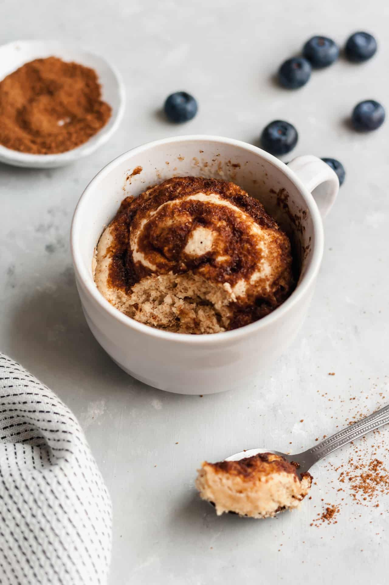

Cinnamon Roll Mug Cake

How to make a delicious cinnamon roll quickly in your microwave
Have you ever craved a little sweet treat? This is the perfect recipe to get
your sweet fix. This recipe is simple, fast, and calorie conscious. Enjoy your
breakfast for dessert today!
Ingredients
- 1/4 cup all-purpose flour
- 1/4 teaspoon baking powder
- 2 tablespoons unsweetened vanilla almond milk or other milk
+ 1-2 tablespoons more, as needed
- 1 tablespoon maple syrup
- 1/4 teaspoon vanilla extract
- 1 teaspoon melted butter
- 1 tablespoon brown sugar
- 1/4 teaspoon ground cinnamon
Steps
- Spray a microwavable mug with cooking spray and then mix together flour,
baking powder, milk, maple syrup, vanilla and melted butter inside.
Add 1-2 tablespoons more of milk, if needed for desired consistency.
You want the batter to stay thick, but not dry.
- In a small bowl, whisk together brown sugar and cinnamon and sprinkle
over the top of the mixture in mug.
- Microwave on high for about 1 minute and 25 seconds. Take out of the
microwave and if desired transfer muffin to a plate. Enjoy!
Home